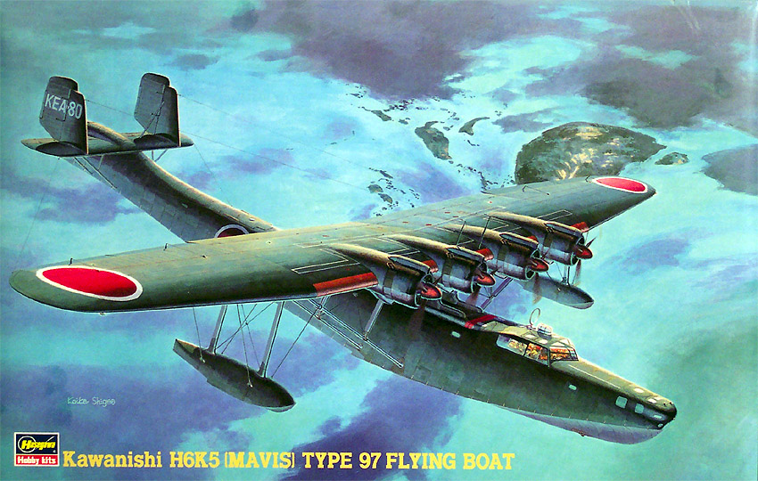
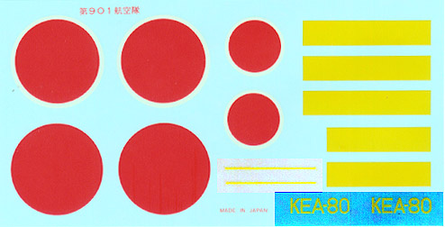

{kind=link}
{kind=link}
{kind=link}
{kind=link}


Hasegawa 1/72 Scale Kawanishi H6K5 Type 97 Flying Boat
Allied Code Name �Mavis�

Kit #51826 MSRP $35.98
Images and text Copyright � 2004 by Matt Swan
Developmental Background
At the opening moments of the war in the Pacific the Japanese Imperial Navy seaplane �Mavis� was one of the best pieces of aerial transport and reconnaissance equipment in their inventory. Soon however, it was found to suffer from inadequate armor, lack of self sealing fuel tanks and vulnerability to ground fire resulting in it being withdrawn from frontline service. An excellent, well built airplane that was arguably the most advanced flying boat in the world at the start of the war and the largest Japanese aircraft at the time it�s wingspan was nearly half again that of the fabled American B-17 bomber.
Kawanishi Kokuki Kabushiki Kaisha (The Kawanishi Aircraft Company Limited) was established in November 1928 at Naruo Mukogun Hyogoken near Kobe. Yoshio Hashiguchi and Shizuo Kikahura led a project to designed a flying boat with a parasol wing mounted above the hull on inverted V struts and braced by parallel struts mounted low on the hull in order to meet a 1934 specification from the Japanese Navy for a long range seaplane with performance comparable to the Sikorsky S-42. Powered by four Nakajima Hikari 2 nine-cylinder air-cooled radials of 840 hp output driving three-bladed propellers the H4K1 first flew in July 1936. Only four of this version was produced before engine upgrades resulted in the definitive H4K2. Four Mitsubishi Kinsei 43 motors producing 1000 hp each powered this version. Still underpowered, ten of this version was produced when additional upgrades resulted in the designation change to H4K3 (a VIP transport model of which only two were made) and quickly then to the H4K4 model 22. One hundred and twenty-seven of these were made from 1939 to 1942 when the K5 model 23 was released with yet more powerful engines, four 1,300-hp Kinsei 53 radials. Thirty-six of this version were manufactured and several K2s and K4s were modified during the same time period.
The Mavis was the first Japanese aircraft to enter service with a power-operated dorsal turret. There were three 7.7mm machine guns, one an open nose position, one in the dorsal turret and one in the tail. It carried either two 1,764 lb. torpedoes or a maximum load of 2,205 lb. of bombs attached to the wing support struts. The Mavis had a crew of nine and could carry 16 passengers in lieu of a weapons load. The largest Japanese plane at the start of WWII, they flew between the far reaches of the Japanese empire, but were no match for fighter attacks despite its defensive armament. The Kawanishi H8K1 Emily four-engine seaplane had replaced them in frontline service by the end of the war. Between 1936 and 1942 215 different examples of the H6K Mavis had been produced.
The Kit
Let�s start with the box, this comes in a big box which is appropriate as it�s a big model, even in 1/72 scale. As you can see from the title picture of this article there is some very nice box art to attract you to this kit but the box itself is of good sturdy construction with the lower section made from a crush resistant fine corrugated cardboard. This is important for us �stash sluts� who need to stack these kits to ridiculous heights � this is a good one for the bottom of the stack. The model has been out of production for a few years now and is currently on the slate for reissue in late 2004 or early 2005. The technology behind this kit is of the older school featuring raised rivets and other raised detail but even with that it is still impressive for both its size and complexity.
The model really does not have panel lines but rows upon rows of fine raised rivets to create the feeling of panel lines. The main fuselage pieces have some large injector pin markings on the interior, which are of little concern as they will not be visible upon completion. There is some warpage in these two large pieces and in the central wing panels. Interior detail is limited to the large cockpit area and that is minimal at best. The kit includes three crewmembers for the cockpit area. There are no other interior details throughout the aircraft. The wing is an interesting assembly consisting of six pieces to build a center section and two outboard sections. Flaps and ailerons are separate assemblies and the flaps feature working hinges. This functional hinge idea is repeated in the tail assembly with fully operational hinges on the rudders and elevators. The engine cylinder banks display some nice detail especially considering the scale and there are lots of small exterior detail pieces such as exhaust shrouds, access ladders and many, many little struts for the wings and tail plane. The model is apparently intended to be built with the beaching gear in place and these pieces are included with the kit. If you want to build it in-flight you will have to fill the mounting holes for these wheels.
In examining the various parts I have found some evidence of injector pin markings mostly on interior areas that will be hidden, some flash in some areas but nothing terrible excessive and even more importantly � no sign of any sink holes or serious mold misalignments anywhere. The various wing struts are very delicate and at least two in my kit were damaged in shipping. The clear parts look to be of good quality with finely raised frame lines and some light flash on a few parts. This is a model that needs quite a bit of rigging done on the flying surfaces and the floats, no material is provided for the rigging but amply directions exist in the instructions and the box top can be used for additional reference. The kit consists of 119 parts on three large trees done in a medium gray injection molded polystyrene and 25 clear pieces on a single tree for a total of 144 pieces in the box.
Decals and Instructions

The instructions for the model come as a large ten panel fold-out that begins with a nice little background on the aircraft in English and Japanese. Five panels are devoted to the basic construction process with fourteen exploded view steps. These include quite a few color call-outs and rigging directions. A single panel covers a paint code chart along with a parts map. Two more panels cover the exterior paint scheme and decal placement instructions. The final panel safety instructions and basic construction tips.
The decal sheet for the model is brief and includes marking for one aircraft only. There are no service stencils but the yellow leading edge markings are provided as decals but the instructions tell you to not use them. Color density looks good and print registry on the hinomarus looks to be right on the money. The aircraft indentification decals are actually white, I adjusted the scan to make those markings visible for the review. As with other Hasegawa decals these will most likely react favorably with setting solutions.
Conclusions
This is a massive kit and not for the beginner modeler. Some of the more challenging items in this kit are the delicate wing struts, the extensive rigging and the complex masking of the small windows around the main canopy area. Construction of the main wing will require some forethought and skill to make it come together properly. While the kit is of an older design with the raised details the general parts fit seems good other than the slight warpage in the larger pieces. Interior detail is seriously lacking and the only solution to that is scratch work. To the best of my knowledge there is nothing on the aftermarket available for this model kit.
Though not for the beginner I still recommend the kit but it will most definitely be a ceiling hanger when complete.